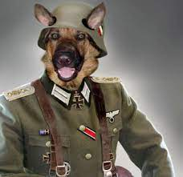
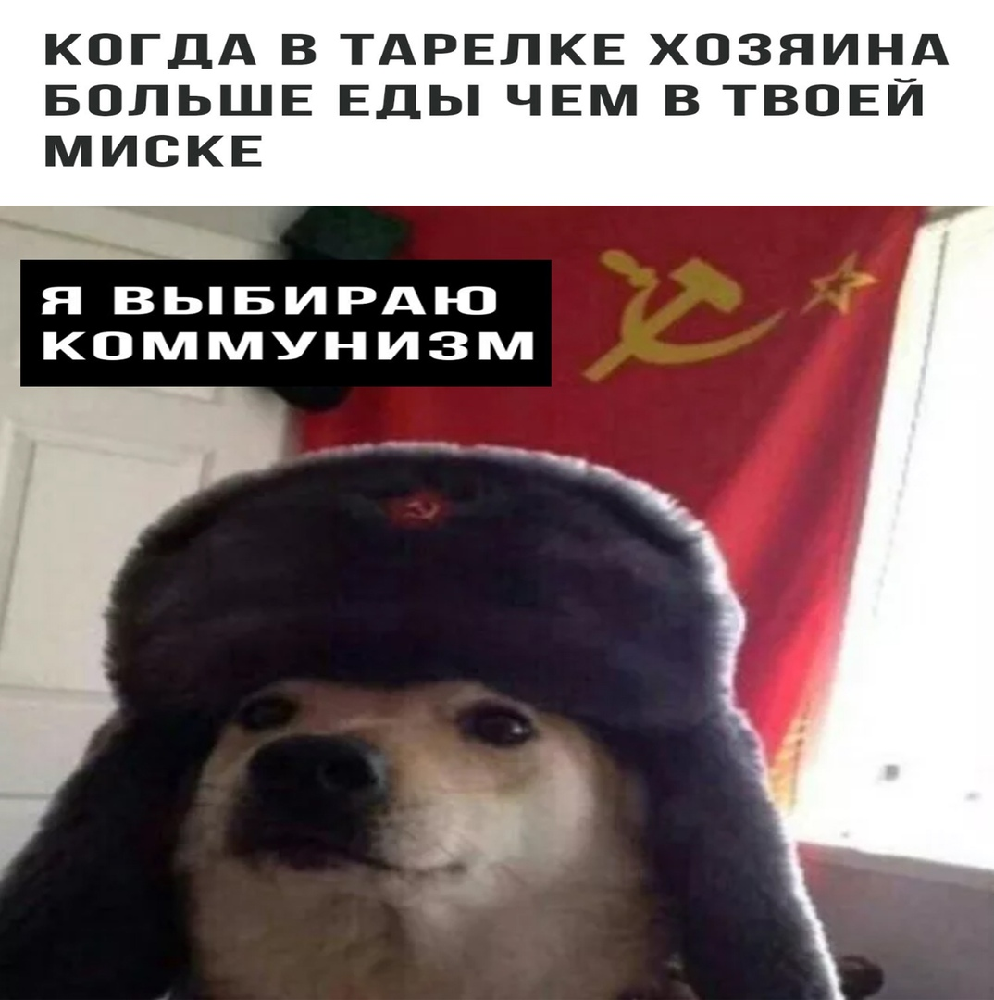
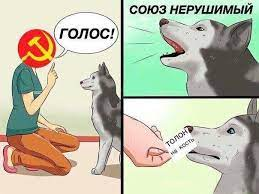

Дуракам закон не писан
The law is not written for fools
Что думают москвичи? Что: закон есть только для поганых мАсквичей, для нацистов, гитлера, сталина и всей прикинтовки военных преступников третьего рейха.
What do Muscovites think? What:the law is only for filthy Muscovites, for the Nazis, Hitler, Stalin and the whole war criminals of the Third Reich.
 Подхватывая дурость Великую и непоколебимую, самые крепкие ущемленцы по приказу зомбоящика, маркируются свастикой: нацистской “V”, нацистской “Z” - которые красовались на рукавах эсэсовцев “преступников третьего рейха”. Буквы на латинице, обозначающие нацистскую свастику чужеродны для наших краёв. Зато еще есть кириллистическая буква “Б”. - Баран! Или еще одна кириллистическая буква “Д”. Догадайтесь сами.
Picking up the stupidity of the Great and unshakable, the strongest infringers, on the orders of the zomboyaschik, are marked with a swastika: the Nazi “V”, the Nazi “Z” - which flaunted on the sleeves of the SS men of the “criminals of the Third Reich”. The Latin letters denoting the Nazi swastika are alien to our region. But there is still a Cyrillic letter “B”. - Baran! Or another Cyrillic letter "D". Guess yourself.
Виноваты инопланетяне!
Aliens are to blame!
Сколько фейков не придумывать, а когда великий церебрал оказывается примитивным “био роботом” сомнительного характера, психическими, физическими и всеми отклонениями которые могли отклониться от нормы., заниженного айкью ниже порога, разумного смысла. Похоже все на полнейший бред! Высококачественный и великий. Такой же великой как законченность последней мАасквы! Сборище нацистских преступников третьего рейха! Не для кого не секрет что каждый москвич - это в лживый вожделениц! Сидящий на на горбушке умирающий страны.
How many fakes not to come up with, and when the great cerebral turns out to be a primitive “bio robot” of a dubious nature, mental, physical and all deviations that could deviate from the norm., understated aikyu below the threshold, reasonable meaning. It all looks like complete bullshit! High quality and great. As great as the completion of the last maaskwa! A bunch of Nazi criminals of the Third Reich! It's no secret that every Muscovite is a false lover! Sitting on the back of a dying country.
Видели где нибудь крысу настолько великую как поганая мАсква? москва погань планеты, вся гниль стекла в одну точку московский бункер, поганого подземелья. Где крысы москвичи устроили новую немощь, нищету и полное москвичество!
Have you ever seen a rat as big as a filthy masqua? Moscow is the trash of the planet, all the rotten glass at one point is a Moscow bunker, a filthy dungeon. Where Muscovite rats have created a new infirmity, poverty and complete Muscovites!
Дискриминация по национальному признаку.
Discrimination based on nationality.
Та же самая дискриминация что и в Украине. Любого кто против свастики, против поганой москвы, против нацизма. Просто убивают. Убийство еще один ход сталинско-гитлеровской трансформации. Концлагеря, крематории, угрозы, шантаж. Москвичи конченные мрази.
The same discrimination as in Ukraine. Anyone who is against the swastika, against filthy Moscow, against Nazism. They just kill. Murder is another move of the Stalin-Hitler transformation. Concentration camps, crematoria, threats, blackmail. Muscovites are complete scum.
Крыса москва продолжает угрожать, кричать нацистские лозунги, пытки, расправа, серп и молот, смерть и голод. Все как в повседневной московской вакханалии. И все это безоружным людям, особенно детям и женщинам, которые не могут ничего возразить. Тогда как в реальном мире, москвичам вылавливают по полной. Поганому московскому псу повыбивали все зубы, чтобы он не скалил зубы, не осмеливался рычать! Зато поганый московский пес причмокивает свои нацистские угрозы. Штрафы, штрафы, работать нельзя! Штраф! Как пишут в кремле отобрать зарплату у Российского работника, как отобрать конфетку у ребенка. С угрозами пытками, расправой, угрозами и известному всей стране национал социалистическим чернокожим коммунистическим бедеэсемщиком. +Унд дас так шток.
Rat Moscow continues to threaten, shout Nazi slogans, torture, reprisal, hammer and sickle, death and hunger. Everything is like in everyday Moscow bacchanalia. And all this to unarmed people, especially children and women, who cannot object to anything. Whereas in the real world, Muscovites are caught to the fullest. They knocked out all the teeth of the filthy Moscow dog so that he would not bare his teeth, would not dare to growl! But the filthy Moscow dog smacks its Nazi threats. Fines, fines, no work! Fine! As they say in the Kremlin to take away a salary from a Russian worker, how to take candy from a child. With threats of torture, reprisals, threats, and a nationally-known socialist black communist troublemaker known throughout the country. + Und das so stock.
Что осталось у поганой москвы? Вломили москвичам как драным, вшивым псам. Показали всему миру какой в москве контингент. Опущенство ниже плинтуса, каннибализм, воровство, нищета и полное москвичество. Ниже некуда. Все это припудривают угрозами! Угрожать но ни военным, которых москва боится, а наоборот, безоружным людям. Потому что у москвичей духу на большего и не хватит. Кого еще запугивать? Безоружных людей, мирных жителей, а еще лучше женщин и детей. Потому что запугивать больше некого.
What is left of filthy Moscow? They broke the Muscovites like tattered, lousy dogs. They showed the whole world what a contingent is in Moscow. Lowering below the plinth, cannibalism, theft, poverty and complete Muscovite. Nowhere below. All this is powdered with threats! To threaten but not the military, whom Moscow is afraid of, but, on the contrary, unarmed people. Because the Muscovites do not have the spirit for more. Who else to intimidate? Unarmed people, civilians, and even better women and children. Because there is no one else to intimidate.
Система комментирования SigComments